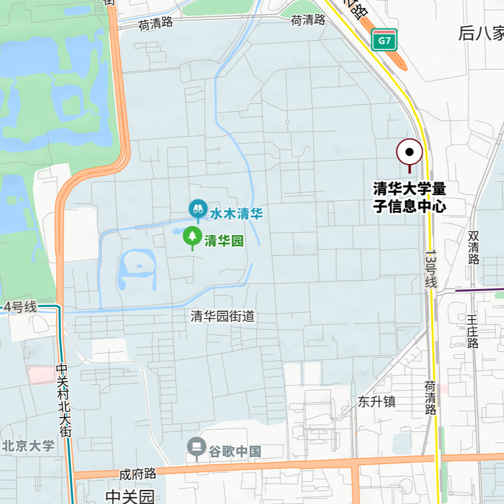

研究方向
- 量子算法与量子纠错 (Quantum Algorithms & Quantum Error Correction)
- 量子多体物理：包括 classical-quantum crossover 和 topological quantum phase 等现象的研究
- 量子力学测量问题：包括量子测量的多世界解释和量子非局域性问题
- 量子物理与人的自由意志之间的关系：包括科学和哲学的研究
个人经历
墨克，清华大学交叉信息研究院博士研究生。
2024年9月 - 至今
清华大学交叉信息研究院，物理学博士研究生
2020年9月 - 2024年6月
武汉大学物理科学与技术学院，物理学学士
2017年9月 - 2020年7月
固始县高级中学
学术成果
联系方式
电话： +86 130-3373-6868
地址： 北京市海淀区清华大学蒙民伟科技楼S219
谷歌学术： Google Scholar Profile
GitHub： @Moke2001
Twitter： @moke2001_whu
微信： xumoke20011106
